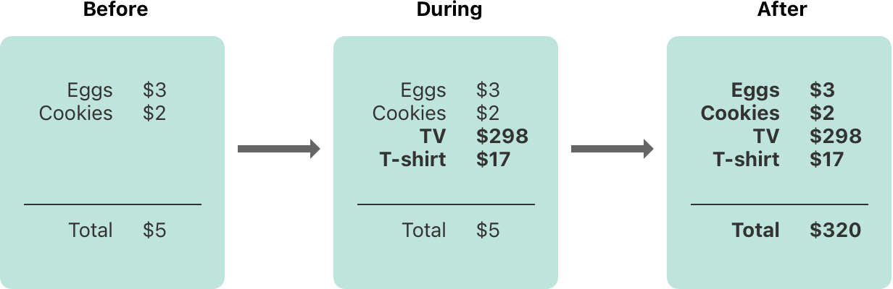
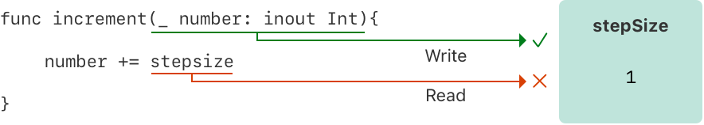
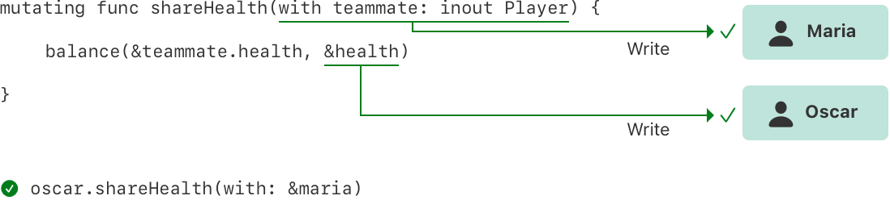
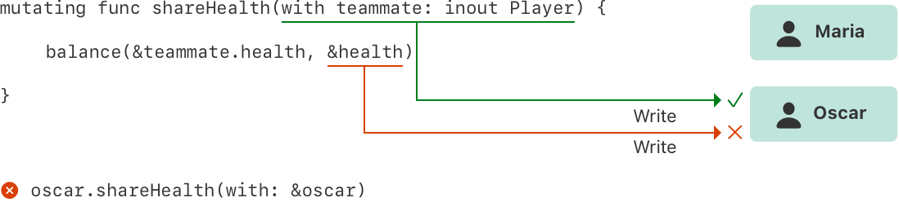

默认情况下，Swift 会阻止你代码里不安全的行为。例如，Swift 会保证变量在使用之前就完成初始化，在内存被回收之后就无法被访问，并且数组的索引会做越界检查。
Swift 也保证同时访问同一块内存时不会冲突，通过约束代码里对于存储地址的写操作，去获取那一块内存的访问独占权。因为 Swift 自动管理内存，所以大部分时候你完全不需要考虑内存访问的事情。然而，理解潜在的冲突也是很重要的，可以避免你写出访问冲突的代码。而如果你的代码确实存在冲突，那在编译时或者运行时就会得到错误。
内存的访问，会发生在你给变量赋值，或者传递参数给函数时。例如，下面的代码就包含了读和写的访问：
x// 向 one 所在的内存区域发起一次写操作var one = 1
// 向 one 所在的内存区域发起一次读操作print("We're number \(one)!")内存访问的冲突会发生在你的代码尝试同时访问同一个存储地址的时侯。同一个存储地址的多个访问同时发生会造成不可预计或不一致的行为。在 Swift 里，有很多修改值的行为都会持续好几行代码，在修改值的过程中进行访问是有可能发生的。
你可以思考一下预算表更新的过程，会看到同样的问题。更新预算表总共有两步：首先你把预算项的名字和费用加上，然后再更新总数来反映预算表的现况。在更新之前和之后，你都可以从预算表里读取任何信息并获得正确的答案，就像下面展示的那样。

而当你添加预算项进入表里的时候，它只是在一个临时的，错误的状态，因为总数还没有被更新。在添加数据的过程中读取总数就会读取到错误的信息。
这个例子也演示了你在修复内存访问冲突时会遇到的问题：有时修复的方式会有很多种，但哪一种是正确的就不总是那么明显了。在这个例子里，根据你是否需要更新后的总数，$5 和 $320 都可能是正确的值。在你修复访问冲突之前，你需要决定它的倾向。
注意
如果你写过并发和多线程的代码，内存访问冲突也许是同样的问题。然而，这里访问冲突的讨论是在单线程的情境下讨论的，并没有使用并发或者多线程。
如果你曾经在单线程代码里有访问冲突，Swift 可以保证你在编译或者运行时会得到错误。对于多线程的代码，可以使用 Thread Sanitizer 去帮助检测多线程的冲突。
内存访问冲突时，要考虑内存访问上下文中的这三个性质：访问是读还是写，访问的时长，以及被访问的存储地址。特别是，冲突会发生在当你有两个访问符合下列的情况：
读和写访问的区别很明显：一个写访问会改变存储地址，而读操作不会。存储地址是指向正在访问的东西（例如一个变量，常量或者属性）的位置的值 。内存访问的时长要么是瞬时的，要么是长期的。
如果一个访问不可能在其访问期间被其它代码访问，那么就是一个瞬时访问。正常来说，两个瞬时访问是不可能同时发生的。大多数内存访问都是瞬时的。例如，下面列举的所有读和写访问都是瞬时的：
xxxxxxxxxxfunc oneMore(than number: Int) -> Int { return number + 1}
var myNumber = 1myNumber = oneMore(than: myNumber)print(myNumber)// 打印“2”然而，有几种被称为长期访问的内存访问方式，会在别的代码执行时持续进行。瞬时访问和长期访问的区别在于别的代码有没有可能在访问期间同时访问，也就是在时间线上的重叠。一个长期访问可以被别的长期访问或瞬时访问重叠。
重叠的访问主要出现在使用 in-out 参数的函数和方法或者结构体的 mutating 方法里。Swift 代码里典型的长期访问会在后面进行讨论。
一个函数会对它所有的 in-out 参数保持长期写访问。in-out 参数的写访问会在所有非 in-out 参数处理完之后开始，直到函数执行完毕为止。如果有多个 in-out 参数，则写访问开始的顺序与参数的顺序一致。
这种长期保持的写访问带来的问题是，你不能再访问以 in-out 形式传入的原始变量，即使作用域原则和访问权限允许——任何访问原始变量的行为都会造成冲突。例如：
xxxxxxxxxxvar stepSize = 1
func increment(_ number: inout Int) { number += stepSize}
increment(&stepSize)// 错误：stepSize 访问冲突在上面的代码里，stepSize 是一个全局变量，并且它可以在 increment(_:) 里正常访问。然而，对于 stepSize 的读访问与 number 的写访问重叠了。就像下面展示的那样，number 和 stepSize 都指向了同一个存储地址。同一块内存的读和写访问重叠了，就此产生了冲突。

解决这个冲突的一种方式，是显示拷贝一份 stepSize ：
xxxxxxxxxx// 显式拷贝var copyOfStepSize = stepSizeincrement(©OfStepSize)
// 更新原来的值stepSize = copyOfStepSize// stepSize 现在的值是 2当你在调用 increment(_:) 之前做一份拷贝，显然 copyOfStepSize 就会根据当前的 stepSize 增加。读访问在写操作之前就已经结束了，所以不会有冲突。
长期写访问的存在还会造成另一种结果，往同一个函数的多个 in-out 参数里传入同一个变量也会产生冲突，例如：
xxxxxxxxxxfunc balance(_ x: inout Int, _ y: inout Int) { let sum = x + y x = sum / 2 y = sum - x}var playerOneScore = 42var playerTwoScore = 30balance(&playerOneScore, &playerTwoScore) // 正常balance(&playerOneScore, &playerOneScore)// 错误：playerOneScore 访问冲突上面的 balance(_:_:) 函数会将传入的两个参数平均化。将 playerOneScore 和 playerTwoScore 作为参数传入不会产生错误 —— 有两个访问重叠了，但它们访问的是不同的内存位置。相反，将 playerOneScore 作为参数同时传入就会产生冲突，因为它会发起两个写访问，同时访问同一个的存储地址。
注意
因为操作符也是函数，它们也会对 in-out 参数进行长期访问。例如，假设
balance(_:_:)是一个名为<^>的操作符函数，那么playerOneScore <^> playerOneScore也会造成像balance(&playerOneScore, &playerOneScore)一样的冲突。
一个结构体的 mutating 方法会在调用期间对 self 进行写访问。例如，想象一下这么一个游戏，每一个玩家都有血量，受攻击时血量会下降，并且有敌人的数量，使用特殊技能时会减少敌人数量。
xxxxxxxxxxstruct Player { var name: String var health: Int var energy: Int static let maxHealth = 10 mutating func restoreHealth() { health = Player.maxHealth }}在上面的 restoreHealth() 方法里，一个对于 self 的写访问会从方法开始直到方法 return。在这种情况下，restoreHealth() 里的其它代码不可以对 Player 实例的属性发起重叠的访问。下面的 shareHealth(with:) 方法接受另一个 Player 的实例作为 in-out 参数，产生了访问重叠的可能性。
xxxxxxxxxxextension Player { mutating func shareHealth(with teammate: inout Player) { balance(&teammate.health, &health) }}
var oscar = Player(name: "Oscar", health: 10, energy: 10)var maria = Player(name: "Maria", health: 5, energy: 10)oscar.shareHealth(with: &maria) // 正常上面的例子里，调用 shareHealth(with:) 方法去把 oscar 玩家的血量分享给 maria 玩家并不会造成冲突。在方法调用期间会对 oscar 发起写访问，因为在 mutating 方法里 self 就是 oscar，同时对于 maria 也会发起写访问，因为 maria 作为 in-out 参数传入。过程如下，它们会访问内存的不同位置。即使两个写访问重叠了，它们也不会冲突。

当然，如果你将 oscar 作为参数传入 shareHealth(with:) 里，就会产生冲突：
xxxxxxxxxxoscar.shareHealth(with: &oscar)// 错误：oscar 访问冲突mutating 方法在调用期间需要对 self 发起写访问，而同时 in-out 参数也需要写访问。在方法里，self 和 teammate 都指向了同一个存储地址——就像下面展示的那样。对于同一块内存同时进行两个写访问，并且它们重叠了，就此产生了冲突。

如结构体，元组和枚举的类型都是由多个独立的值组成的，例如结构体的属性或元组的元素。因为它们都是值类型，修改值的任何一部分都是对于整个值的修改，意味着其中一个属性的读或写访问都需要访问整一个值。例如，元组元素的写访问重叠会产生冲突：
xxxxxxxxxxvar playerInformation = (health: 10, energy: 20)balance(&playerInformation.health, &playerInformation.energy)// 错误：playerInformation 的属性访问冲突上面的例子里，传入同一元组的元素对 balance(_:_:) 进行调用，产生了冲突，因为 playerInformation 的访问产生了写访问重叠。playerInformation.health 和 playerInformation.energy 都被作为 in-out 参数传入，意味着 balance(_:_:) 需要在函数调用期间对它们发起写访问。任何情况下，对于元组元素的写访问都需要对整个元组发起写访问。这意味着对于 playerInfomation 发起的两个写访问重叠了，造成冲突。
下面的代码展示了一样的错误，对于一个存储在全局变量里的结构体属性的写访问重叠了。
xxxxxxxxxxvar holly = Player(name: "Holly", health: 10, energy: 10)balance(&holly.health, &holly.energy) // 错误在实践中，大多数对于结构体属性的访问都会安全的重叠。例如，将上面例子里的变量 holly 改为本地变量而非全局变量，编译器就会可以保证这个重叠访问是安全的：
xxxxxxxxxxfunc someFunction() { var oscar = Player(name: "Oscar", health: 10, energy: 10) balance(&oscar.health, &oscar.energy) // 正常}上面的例子里，oscar 的 health 和 energy 都作为 in-out 参数传入了 balance(_:_:) 里。编译器可以保证内存安全，因为两个存储属性任何情况下都不会相互影响。
限制结构体属性的重叠访问对于保证内存安全不是必要的。保证内存安全是必要的，但因为访问独占权的要求比内存安全还要更严格——意味着即使有些代码违反了访问独占权的原则，也是内存安全的，所以如果编译器可以保证这种非专属的访问是安全的，那 Swift 就会允许这种行为的代码运行。特别是当你遵循下面的原则时，它可以保证结构体属性的重叠访问是安全的：
如果编译器无法保证访问的安全性，它就不会允许那次访问。